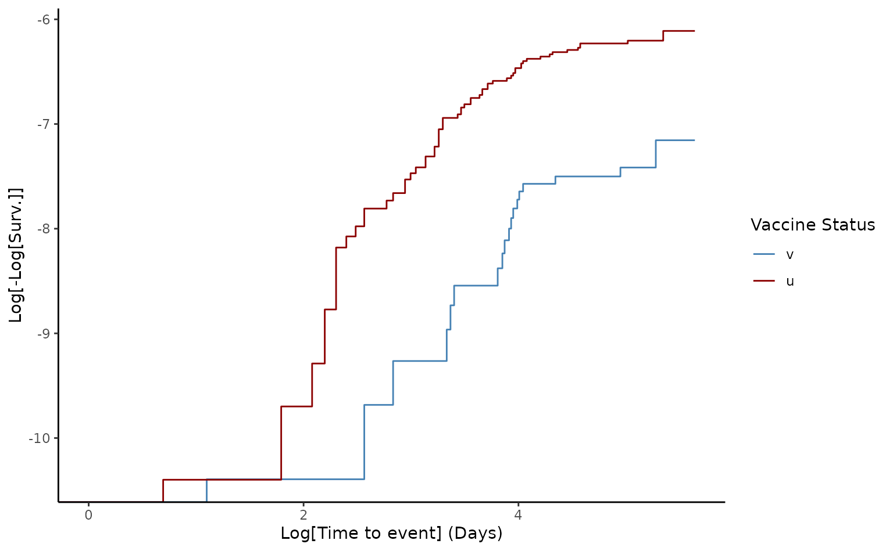

Usage
Estimating vaccine effectiveness is a key task once a vaccine is available as a control measure within a population, such as during the middle phase of an epidemic like Ebola or COVID-19, and also in the evaluation of regular vaccination programs, such as childhood vaccines.
vaccineff provides tools to estimate vaccine
effectiveness under different study designs, including cohort studies,
test-negative/case-control studies, and the screening method (torvaldsen2020?).
Each design comes with its own example data set, which includes
information on vaccination dates and biological details per dose, as
well as relevant demographic information. The level of data aggregation
is tailored to the characteristics and needs of each study case.
Who are the users / potential users?
vaccineff is useful for local, national, and
international health agencies looking for a quick implementation to
estimate vaccine effectiveness based on their available data. It also
provides insights to researchers, data analysts, and epidemiology
students on how to approach vaccine effectiveness using different
methods.
What is vaccine effectiveness?
In contrast with vaccine efficacy, which is the percentage reduction of disease incidence in a vaccinated group compared with an unvaccinated group under ideal conditions, vaccine effectiveness () is the percentage reduction of disease incidence in a vaccinated group compared with an unvaccinated group under routine conditions. Evaluating the effectiveness of vaccines in the field is an important aspect of monitoring immunization programs.
For which designs of vaccine effectiveness is this package?
vaccineff is a package designed to be used for any
infectious disease for which a vaccine strategy has been implemented.
The study designs currently implemented in the package are: cohorts,
test-negative/case-control, and the screening method.
Cohort Design
In the cohort design, is estimated using the Hazard Ratios () between vaccinated and unvaccinated populations,
The HR is estimated using the Cox Proportional Hazards model. In particular, we use the vaccine status of the individuals as the only covariate in the regression. Other confounders can be included as matching arguments to adjust for observational bias. The proportional hazards hypothesis is checked using the Schoenfeld test. A visual check is also provided using the log-log representation of the Survival Probability. If the hypothesis is not satisfied, it is recommended to stratify the population into smaller groups using the confounding variables.
Test Negative Design (Future release)
The test-negative design is a modified case-control design. is estimated using the odds ratio () of vaccination among cases divided by the OR of vaccination among controls,
Screening Method (Future release)
The screening method estimates using the proportion of cases vaccinated () and the proportion of the population vaccinated (),
To calculate the , it is assumed that all, or at least a random sample of cases of a disease arising over a given period in a defined population, is available. Additionally, it incorporates the as prior information or an external estimate.
What type of data is needed to use the package?
This package is designed to be used with vaccination data sets with the following structure.
Data for Cohort design
Data disaggregated at the individual level to follow vaccinated and unvaccinated populations over time. The dataset must contain the following information:
Date(s) of vaccination for each individual. The package allows working with multiple doses for each individual and estimates the immunization date using delay times of outcomes and immunization times of vaccines.
Date(s) of outcome(s). The package estimates vaccine effectiveness against various outcomes. Individuals’ demographic information (e.g., sex, age-group, health status) can be specified depending on the confounding variables that will be introduced in the model.
Data for Test-negative design (Future release)
Data disaggregated at the individual level to correlate vaccination and disease status for each case. The dataset must contain the following information:
Vaccination status for each individual. Consider time since vaccination and number of doses to determine whether they are vaccinated or unvaccinated.
Result of gold-standard test for the pathogen of interest. Molecular tests such as PCR or multiplex-PCR are commonly used to determine etiological agents in TND studies.
Individuals’ demographic information (e.g., sex, age, health insurance) and other variables that may be specified depending on the confounding variables to be introduced in the model.
Data for Screening method design (Future release)
Vaccination status for each case or age group. Consider time since vaccination to determine whether individuals are vaccinated or unvaccinated. Exclude patients with incomplete vaccination schedules if the vaccine of interest requires several doses for maximum efficacy.
Proportion of the population vaccinated. Data can be administered as individuals with complete vaccination, individuals without complete vaccination, or as the proportion of the population vaccinated.
Individuals’ demographic information (e.g., sex, age, health insurance) and other variables that may be specified depending on the confounding variables to be introduced in the model.
Modeling vaccine effectiveness
VE for Cohort design
The current release of the package bases the estimation of in the cohort design on the assumption of proportional hazards between vaccinated and unvaccinated populations. The hazard ratio is estimated using the Cox proportional hazards model implemented in the R package survival.
The integrated dataset cohortdata serves as a minimal
example of the package’s input. The data is accessed using
data("cohortdata").
The following example estimates by:
Defining the immunization information using the function
make_immunization(). This method returns the cohort data with the immunization date based on the characteristic response time to vaccination (immunization_delay) and the specified limits (outcome_date_col, censoring_date_col, end_cohort).Matching the cohort by exact and nearest confounders using the function
match_cohort(). This function supports methods likesummary()to check matching balance and the sizes of matched, excluded, and removed populations, andget_dataset()to extract the matched cohort.Estimating with the function
effectiveness()using the hazard ratio (). A summary of the estimation can be obtained usingsummary()and a graphical representation of the methodology is generated byplot().
data("cohortdata")
# Define start and end dates of the study
start_cohort <- as.Date("2044-01-01")
end_cohort <- as.Date("2044-12-31")
# Create `data.frame` with information of immunization
cohortdata <- make_immunization(
data_set = cohortdata,
outcome_date_col = "death_date",
censoring_date_col = "death_other_causes",
immunization_delay = 14,
vacc_date_col = "vaccine_date_2",
end_cohort = end_cohort
)
head(cohortdata)
#> id sex age death_date death_other_causes vaccine_date_1 vaccine_date_2
#> 1 afade1b2 F 37 <NA> <NA> <NA> <NA>
#> 2 556c8c76 M 19 <NA> <NA> <NA> <NA>
#> 3 04edf85a M 50 <NA> <NA> <NA> <NA>
#> 4 7e51a18e F 8 <NA> <NA> <NA> <NA>
#> 5 c5a83f56 M 66 <NA> <NA> <NA> <NA>
#> 6 7f675ec3 M 29 <NA> <NA> 2044-04-09 2044-04-30
#> vaccine_1 vaccine_2 immunization_date vaccine_status
#> 1 <NA> <NA> <NA> u
#> 2 <NA> <NA> <NA> u
#> 3 <NA> <NA> <NA> u
#> 4 <NA> <NA> <NA> u
#> 5 <NA> <NA> <NA> u
#> 6 BRAND1 BRAND1 2044-05-14 v
# Match the data
matching <- match_cohort(
data_set = cohortdata,
outcome_date_col = "death_date",
censoring_date_col = "death_other_causes",
start_cohort = start_cohort,
end_cohort = end_cohort,
method = "static",
exact = "sex",
nearest = c(age = 1)
)
# Check matching balance aand summary
summary(matching)
#> Balance all:
#> u v smd
#> age 30.9928364 48.1656078 0.8599792
#> sex_F 0.4834661 0.5758635 0.1859192
#> sex_M 0.5165339 0.4241365 -0.1859192
#>
#> Balance matched:
#> u v smd
#> age 43.1952984 45.6560579 0.1330454
#> sex_F 0.5555154 0.5555154 0.0000000
#> sex_M 0.4444846 0.4444846 0.0000000
#>
#> Summary:
#> u v
#> All 62538 37462
#> Matched 33180 33180
#> Unmatched 29358 4282
# Extract matched data
cohortdata_match <- get_dataset(matching)
# Calculate vaccine effectiveness
ve <- effectiveness(
data_set = cohortdata_match,
start_cohort = start_cohort,
end_cohort = end_cohort,
method = "HR"
)
# View summary of VE
summary(ve)
#> Vaccine Effectiveness computed as VE = 1 - HR:
#> VE lower.95 upper.95
#> 1 0.8382 0.7337 0.9016
#>
#> Schoenfeld test for Proportional Hazards hypothesis:
#> p-value = 0.0021
# Generate plot of method
plot(ve)